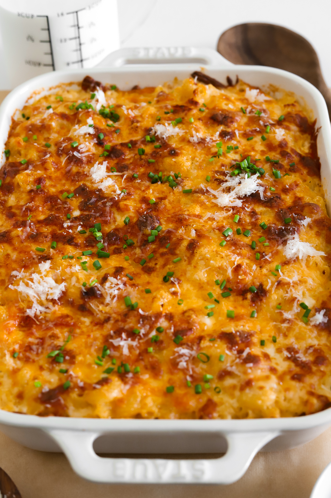

THE BEST MAC & CHEESE
PREP TIME: 30 MIN
COOK TIME: 45 MIN
TOTAL TIME: 1 HR 15 MIN
YIELDS 6-8

INGREDIENTS
PASTA
- 1 pound large elbow macaroni
- salt, to cook pasta
CHEESE SAUCE
- -6 tablespoons unsalted butter
- -3 tablespoons all-purpose flour
- -1 tablespoon minced garlic
- -3 3/4 cup warm heavy cream
- - 3 tablespoons cream cheese, softened
- -1 1/2 cup sharp cheddar, shredded
- -1 cup Colby jack, shredded
- -1/2 cup smoked gouda, shredded
- -2 teaspoons smoked paprika
- -1 1/2 teaspoon dry mustard powder
- -1/2 teaspoon black pepper more to taste
- -1/2 to 1 teaspoon salt, to taste
- -pinch of nutmeg
- -pinch of cayenne
OTHER
- -2 cups shredded cheese, of choice
-
-optional: chopped parsley or chives and grated parmesan on top
INSTRUCTIONS:
COOK THE PASTA
-
Bring a large pot of salted water to a boil. Add pasta and cook
a minute below al dente. The pasta will finish cooking in the
oven.
MAKE THE CHEESE SAUCE
-
Heat a saucepan or pot over medium heat. Add the butter.
Once melted, whisk in the flour and cook for 2 to 3 minutes
until it just starts to bubble and turns a yellow-golden color.
-
Add in the garlic and saute with the roux for another minute.
-
Pour in the heavy cream slowly and whisk continuously until
smooth. Then add the cream cheese, dry mustard powder,
smoked paprika, black pepper, nutmeg, cayenne powder, and salt.
Whisk together until smooth. Continue to cook the sauce for
3 to 4 minutes or until it thickens.
-
Reduce the heat to low or take off the heat and add the sharp
cheddar, Colby jack, and smoked gouda. Whisk together until
there are no more clumps and the sauce is completely smooth.
Taste and adjust anything to your liking.
ASSEMBLY & BAKING
-
Once the pasta is done cooking, drain it and toss it into the
sauce immediately. Mix together in a large baking dish.
-
Once the pasta is done cooking, drain it and toss it into the
sauce immediately. Mix together in a large baking dish.
-
Bake at 350°F for 15 minutes. Then turn to broil for a few
minutes just until the top is golden and crispy - make sure to
monitor it closely.
-
Top it off with chopped parsley or chives and grated parmesan
and enjoy!
Return to top
CROISSANT EGG BOATS
PREP TIME: 15 MIN
COOK TIME: 20 MIN
TOTAL TIME: 35 MIN
YIELDS 8

INGREDIENTS
BACON AND CHEDDAR
- -6 Large eggs
- -6 Strips of bacon
- -1/2 cup shredded cheddar cheese
- -salt, to taste
- - black pepper to taste
INSTRUCTIONS:
PREPARE THE CROISSANTS:
-
Preheat your oven to 350°F (175°C).
-
Slice the top off each croissant and gently carve out the center
creating a boat-like shape. Be careful not to cut through the
bottom or sides.
-
Press down the remaining center of the croissant to create a
well for the fillings.
BACON AND CHEDDAR
-
Sprinkle shredded cheddar cheese into the well of each of 4
croissants.
-
Place a strip of beef bacon on top of the cheese in the well.
-
Crack an egg into each croissant boat, directly on top of the
bacon and cheese.
-
Season with salt and black pepper to taste.
-
Add a little bit more cheese on top.
-
Place the filled croissants on a baking sheet and bake in the
preheated oven for 15-20 minutes, or until the eggs are set and
the croissants are golden.
Return to top
LOADED TATER TOT CUPS
PREP TIME: 15 MIN
COOK TIME: 30 MIN
TOTAL TIME: 45 MIN
YIELDS 12 CUPS
INGREDIENTS
- 1 bag frozen tater tots
- avocado oil spray
- sour cream
- beef bacon, chopped
- green onions or chives, thinly sliced
- cheddar cheese, shredded
Garlic Butter
- 1/4 cup unsalted butter, melted
- 1 tablespoon parsley, finely chopped
- 1/2 tablespoon garlic, minced
- 2 tablespoons parmesan, grated
- 1/4 teaspoon salt, or to taste
- 1/8 teaspoon black pepper
- 1/8 teaspoon dried oregano
INSTRUCTIONS:
MAKE THE GARLIC BUTTER
-
In a small bowl, mix butter with parsley, garlic, parmesan,
salt, black pepper, and oregano.
MAKE THE CUPS
- Preheat the oven to 425°F.
-
Brush each cup in a cupcake tray with garlic butter or just
spray with avocado oil.
-
Add 5 to 6 tater tots into each cup and bake for 10 minutes.
-
Take out of the oven and use a shot glass to mash the tater tots
into a cup shape.
-
Brush the inside with more garlic butter and add a little bit of
shredded cheddar cheese inside each cup
-
Place the filled croissants on a baking sheet and bake in the
preheated oven for 15-20 minutes, or until the eggs are set and
the croissants are golden.
-
Pop back in the oven and bake for 13 to 17 minutes until golden
and crispy all around.
-
Take out of the oven, allow to cool for 5 minutes, and then
slide out the cups.
-
Add sour cream, beef bacon, green onions, and more cheese into
each cup and serve warm!
Return to top